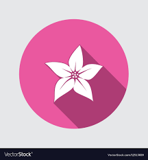

Hello. How are you today?
11:00
Hey! I'm fine. Thanks for asking!
11:01Sweet! So, what do you wanna do today?
11:02
Nah, I dunno. Play soccer.. or learn more coding perhaps?
11:05Hello. How are you today?
11:00
Hey! I'm fine. Thanks for asking!
11:01Sweet! So, what do you wanna do today?
11:02
Nah, I dunno. Play soccer.. or learn more coding perhaps?
11:05